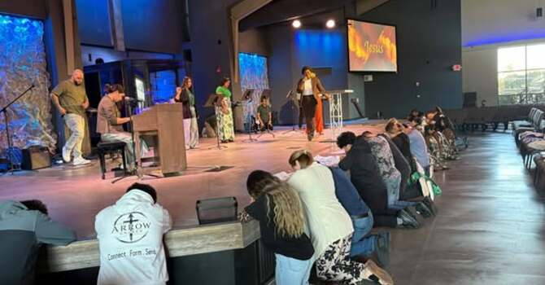
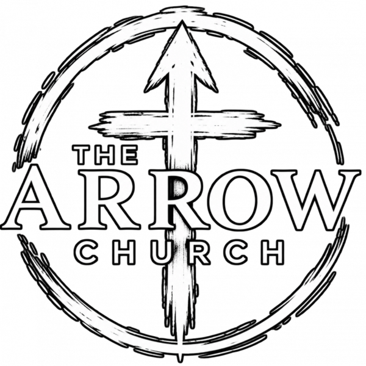

Worship together ↗

THE ARROW CHURCH · JANESVILLE, WI
One church. Two languages. A place where you and your family belong.
WELCOME HOME
Join us in Janesville, Wisconsin, for worship and a community where you truly belong. Whether you come in person or join The Arrow Church Anywhere, you are welcome here.
Discover what to expectWHAT TO EXPECT
Your first visit should feel simple. Here’s a little of what you can expect when we gather.

Worship service at 12:30 PM. Kids ministry at 1:30 PM.
Join us for worship at 7:00 PM.
Watch The Arrow Church Anywhere live on Sundays at 12:30 PM Central.
GET CONNECTED
There is no one way to begin. Explore the path that feels right for you.
EVERY GENERATION
There is a place to connect and grow at every age.
THE ARROW CHURCH ANYWHERE
You’re part of our family no matter where you are. Watch the livestream Sundays at 12:30 PM Central.
Watch livestreamPLAN YOUR VISIT
Join us at 2931 Lucerne Dr, Janesville, WI 53545. Worship services are Sundays at 12:30 PM and Fridays at 7:00 PM. Kids ministry meets Sundays at 1:30 PM.
Get directionsSERVICE TIMES / HORARIOS DE SERVICIO